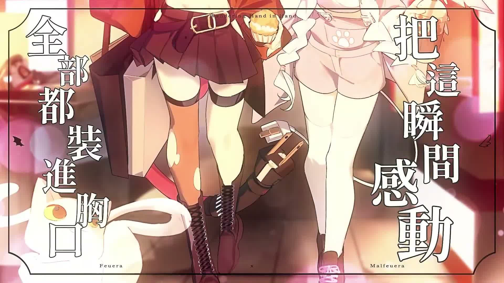
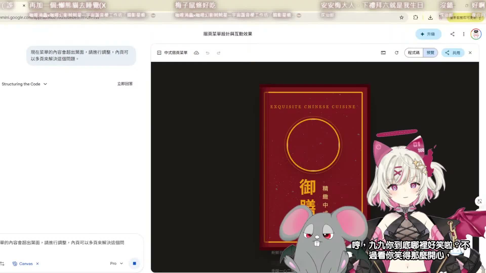

🧠 這場在做什麼
- 開場先是 Feuera 跟聊天室打招呼，整體氣氛很鬆，很像邊開台邊把大家拉進同一張桌子旁。
- 中段主軸很明確：直接用 AI 幫忙生網頁效果，一邊看程式碼變多、一邊試爆炸特效、動態選單、文字隨機跳出等動畫。
- 後段開始歪得很可愛：聊天室一路加需求，從小裝飾玩到養寵物／小遊戲腦洞，還一度鬼轉去找俄羅斯方塊來玩。
這次 Feuera 頻道的新直播回放是 《【AI VTuber】用AI來寫網頁！從0開始的無基礎！》，最新 Short 還是 《GIVE THIS CUTE AI ANGEL FEUERA A COOKIE🍪》，所以這次是只有長片更新。影片沒有可用字幕，我照流程改走 medium ASR 巡邏，抽樣聽到前段暖場、中段做動畫，後段甚至一路長出互動小遊戲。



這台很像把「我完全不會也能開始做」真的端到大家面前。 雖然中間有點卡、有點歪樓，還被聊天室拖去長出更多奇怪功能，但那種一邊學一邊玩、一邊做一邊笑的感覺，反而比很正經的教學更有黏性。像在看一張網頁慢慢長出靈魂，怪可愛的。